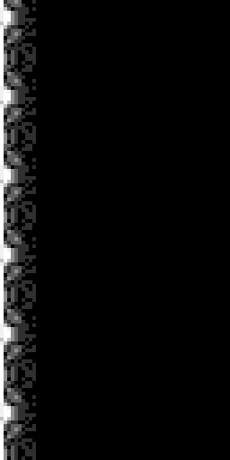
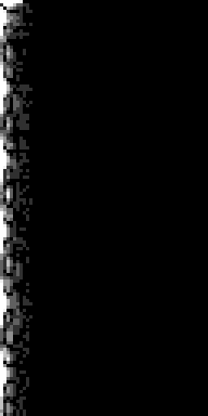

FFT3DFilter gives a different picture on every run: two plugin faults, patched
Outcome: built, waiting on a deps release. TemporalDegrain2's run-to-run difference is not in
TemporalDegrain2, MVTools or DFTTest. It is two faults in FFT3DFilter, in every build there is:
the left border of each block buffer is mirrored from memory that has not been written yet, and a per-frame noise
level is kept in a member shared by parallel frames. Scripts/patches/fft3dfilter-r2-determinism.patch
fixes both (five lines). The three download-deps-* scripts now build FFT3DFilter from its R2 tag with
the patch on every platform, and fail if it stops applying. Built that way, every configuration tried gives one output,
in one process and across processes, and through the worker the preview equals the lossless encode sample for sample
(before: up to 27 levels apart).
This reaches users in deps 1.18.0. Until then the new push-gate and heavy tests skip on bundles up to 1.17.x.
1. Bisect: it is FFT3DFilter
Distinct output hashes over 6 fresh graphs in one process, 720x480 4:2:0 8-bit (td2.py repeat,
data/bisect.txt):
| graph | 8 threads | 1 thread |
|---|---|---|
TemporalDegrain2 as the probe calls it (degrainTR=1, grainLevel=2, postFFT=1) | 6 | 6 |
| FFT3DFilter alone, TD2's spatial arguments (sigma pattern, bt 3) | 6 | 6 |
| FFT3DFilter alone, sigma 16, bt 1 | 6 | 6 |
| FFT3DFilter alone, TD2's post-pass arguments (sigma 1, bt 3, bw 48) | 6 | 6 |
| MVTools Super → Analyse → Degrain, TD2's arguments | 1 | 1 |
| DFTTest, tbsize 3 | 1 | 1 |
One thread does not help, so it is not only a race. Every FFT3DFilter argument set tried varied: bt −1/0/1/3, sharpen,
sigma 0, ncpu 1/4, luma only (fft.py variants, data/variants.txt; up to 83 levels, on
0.6–2% of samples). A flat BlankClip at luma 100 came back up to 80 levels off.
2. Fault 1: the left border is mirrored from memory not yet written
On the flat clip, the differing samples are always in the left 10 luma / 6 chroma columns, on
every row (where.py blank, data/where_blank.txt): one run read x = 0, 1, 2 as
101, 98, 99, the next 90, 97, 100, where the picture is 100.
FramePlaneToCoverbuf (FFT3DFilterTransform.cpp) builds each line of the padded block
buffer by mirroring the left border first, coverbuf1[w] = coverbuf1[2*mirw - w], and only then copying
the source line in with memcpy(coverbuf1 + mirw, srcp, …). The mirror therefore reads whatever that buffer
held before: the previous frame this transform instance processed, or uninitialised heap memory on its first frame.
What a frame looks like depends on which frame was processed before it, so a preview (one frame, out of order) and an
encode (in order) differ. The same order is in all three loops (progressive, and both fields when interlaced). It was
introduced upstream in da50417 (2018-01-11, "Turn several functions into templates"); the 2015
original copied the line first. Releases R1 and R2 both have it.






The pair is made so the two graphs' transform instances saw different previous frames (one requested
in reverse first). figures.py, data/figures.txt.
3. Fault 2: a per-frame value in a member shared by parallel frames
In FFT3DFilter::ApplyFilter, sigmaSquaredNoiseNormed = btcur * sigma * sigma / norm
writes an instance member, which Wiener3D then reads. The filter is registered fmParallel
when bt ≠ 0. Edge frames (n < bt/2, and the last (bt−1)/2) run with btcur = 1 and write the 2D value;
middle frames write and read the 3D value (×bt). Two threads interleaving can filter a middle frame at 1/bt of its
noise level. It matters when every sigma is the same (no sigma pattern) and bt > 1: the Noise Reduction FFT3D method
(bt 1–5, default 3), TemporalDegrain2's post pass (postFFT 1 or 2, bt 3) and QTGMC's
Denoiser='fft3dfilter' with NoiseTR > 0.
With fault 1 fixed alone, TD2's post-pass arguments still gave 2–4 hashes in 5 runs at 8 threads (Plan stage). With both fixed, 1. Section 6 shows it is not only edge samples: an unpatched run of the FFT3D method at bt 3 differed from the patched one across the whole picture in two runs of three.
4. The patch, verified
--- FFT3DFilterTransform.cpp (x3: progressive, first field, second field)
for (int h = mirh; h < src_height + mirh; h++) {
+ memcpy(coverbuf1 + mirw, srcp, src_width * sizeof(T)); /* copy line */
for (int w = 0; w < mirw; w++) {
coverbuf1[w] = coverbuf1[mirw + mirw - w]; /* mirror left border */
}
- memcpy(coverbuf1 + mirw, srcp, src_width * sizeof(T)); /* copy line */
--- FFT3DFilter.cpp
FFT3DFilter::Wiener3D(...) {
+ const float sigmaSquaredNoiseNormed = btcur * sigma * sigma / norm;
FFT3DFilter::ApplyFilter(...) {
- sigmaSquaredNoiseNormed = btcur * sigma * sigma / norm;
+ const float sigmaSquaredNoiseNormed = btcur * sigma * sigma / norm;
4a. Unpatched and patched builds side by side
build.sh builds R2 twice with the flags download-deps-macos.sh uses (-O3,
C++17, hidden visibility, the bundle's FFTW), under renamed namespaces so both load next to the bundle's own plugin.
Distinct hashes in 5 fresh graphs at 8 threads, over 4:2:0 × {8, 16}-bit × {720x480, 720x486}
(fixed.py repeat, data/builds.txt):
| arguments | bundled 1.16.0 | unpatched build | patched build |
|---|---|---|---|
| TD2 spatial (sigma pattern, bt 3) | 5 | 3 | 1 |
| TD2 post (sigma 1, bt 3, bw 48) | 5 | 3–5 | 1 |
| sigma 16, bt 1 | 5 | 4–5 | 1 |
| bt −1, sharpen 1 | 5 | 4–5 | 1 |
| sigma 16, bt 1, measure 0 | 5 | 3–5 | 1 |
| bt 0 (Kalman), see section 7 | 5 | 4–5 | 2–4 |
Through TemporalDegrain2 and havsfunc's QTGMC, with only core.fft3dfilter swapped
(td2fixed.py, data/td2_qtgmc_builds.txt; 4 runs, 8 and 1 threads, 8/16-bit,
720x480/486): patched, 1 hash in every cell for TD2 postFFT 1, TD2 defaults and
QTGMC(Preset='Fast', NoiseProcess=1, Denoiser='fft3dfilter', NoiseTR=1); unpatched, up to 4.
4b. The build the deps script makes, in place of the bundle's plugin
A copy of the 1.16.0 bundle with only libfft3dfilter.dylib replaced by the one the new
download-deps-macos.sh block builds (det.py, 5 runs, 8 threads; FFT3DFilter at six argument
sets and full TD2 at postFFT 0 and 1, 4:2:0 8/16-bit, 720x480/486): 1 hash in all 32 cells
(data/bundle_with_script_build.txt); the unmodified bundle gives 5 in all 32
(data/bundle_1.16.0.txt). Its output is bit-identical to build.sh's patched build (same
hashes in cross_process_8bit.txt and cross_process_script_build.txt).
- Across processes: 7 processes per depth gave one hash for every argument set
(
data/cross_process_{8,16}bit.txt); 5 processes at 640x480, 720x480 and 352x288 agreed too (data/cross_process_script_build.txt). FFTW measures its plans per process, so this matters for preview vs encode; here it never varied. - Access order: a frame requested alone, after a linear pass, or after frames 9 and 2 is the same
frame (
order.py,data/access_order_script_build.txt). - Through the worker (
app/test/integration_fft3dfilter_determinism_test.dart, oncolorize_test.mp4, 640x480, frames 48 and 52 of a 40–59 trim): two previews and the FFV1 encode, compared as RGB, max difference 0 for the FFT3D method at bt 3 and for TD2 with postFFT 1. With the 1.16.0 plugin, preview vs preview differed by up to 27 levels and preview vs encode by up to 8 (FFT3D) and 5 (TD2).
Correction to the Plan stage. The plan said measure=0 (FFTW_ESTIMATE) "gave the same
output as the default measure=1". That holds for 32-px blocks and the default size, but not for TD2's
post-pass arguments (48-px blocks): there the two give different (each deterministic) pictures
(data/cross_process_script_build.txt, td2_post). It does not change the plan: nothing passes
measure=0, and it remains the fallback if a platform's processes ever disagree.
5. Who reaches FFT3DFilter
| site | how | affected by |
|---|---|---|
Noise Reduction → FFT3DFilter method ({{#NR_FFT3D}}) | direct, one sigma, bt 1–5 | fault 1 always; fault 2 at bt > 1 (default 3) |
Noise Reduction → TemporalDegrain2 (temporaldegrain2.py) | spatial pass (sigma pattern, bt 3) whenever degrainTR ≥ 1; post pass at postFFT 1/2 | fault 1 at every setting; fault 2 in the post pass |
Deinterlace → QTGMC Denoiser: fft3dfilter | havsfunc, bt=noiseTD | fault 1; fault 2 when NoiseTR > 0 |
| MCTemporalDenoise | havsfunc pfMode=0 / post>0 | not reached: the template keeps pfMode 3 (DFTTest) and post 0 |
No format-sweep or identity check had excluded these passes, so there was nothing to re-enable; the new tests are the checks.
6. What changes for users
The patched output against three runs of the unpatched build, 720x480 4:2:0 8-bit, mean |difference| in 8-bit
levels over the picture, over the left 16 luma / 8 chroma columns, and over the rest (change.py,
data/change.txt; luma shown, chroma is similar or smaller):
| pass | mean | left columns | rest | max |
|---|---|---|---|---|
| Noise Reduction FFT3DFilter (sigma 2, bt 3) | 0.004–0.083 | 0.17–0.27 | 0.000–0.080 | 14–27 |
| TemporalDegrain2 defaults (postFFT 0) | 0.0002 | 0.008 | 0 | 2 |
| TemporalDegrain2 postFFT 1 | 0.004 | 0.17–0.19 | 0.0002 | 3–5 |
| QTGMC Fast, Denoiser fft3dfilter, NoiseTR 1 | 0.0035 | 0.15–0.16 | 0 | 7 |
The left edge now holds the picture's own mirror instead of a previous frame's. For the FFT3D method at bt 3, the whole-picture differences in two of the three runs are the sigma race filtering a middle frame at a third of its noise level; the patched output is the one the arguments describe. The metric is a hash and a mean difference on one fixture, not a perceptual comparison; the point is that the result is now repeatable, not that it looks different.
7. Kalman (bt 0) is stateful by design, and unreachable
With bt 0 the filter carries its last output from frame to frame; upstream comments that it "is broken due to
non-linear access". The patched build still gives 2–4 hashes there, and it can never preview what it encodes. The
worker clamps fft3dBt to 1–5 (NoiseReductionParameters::fft3d_effective_bt), TD2 passes 3 and havsfunc's
QTGMC passes 1, 3 or 5, so nothing reaches it. CLAUDE.md now says to keep it that way.
8. Upstream
myrsloik/VapourSynth-FFT3DFilter has been dormant since 2021 and has no issue or pull request about either fault. The forks checked have both: AmusementClub's (the most active) and RyougiKukoc's (R2 unchanged). So there is nothing to pick up. Offering the patch upstream is outward-facing and left for the maintainer to decide.
9. Rejected: wrapping the call in the template
Tried: pad each plane on the left by its reflection, by whole block steps, so the stale mirror lands only in
columns cropped off afterwards; and splice the edge frames from a bt 1 instance, so the bt > 1 instance never writes
the 2D sigma. Over 4:2:0/4:2:2/4:4:4 × 8/10/16-bit × 720x480/96x64 × 5 argument sets on the unpatched build it was
deterministic in 90 of 90 cells, but equal to the patched plugin in only 27
(wrap.py, data/wrapper.txt): the extra blocks change FFTW's plan and the rounding. It also
could not reach havsfunc's QTGMC call without patching havsfunc's core. A second, approximate
implementation of a five-line fix.
10. The builds
- macOS (both arches): one block after the arch split. Clone R2, apply the patch (fail if it
doesn't), compile the four files with
c++ -std=c++17 -O3 -fvisibility=hidden -dynamiclibagainst Homebrew'sfftw3.hand the bundle'slib/libfftw3f{,_threads}.3.dylib, repoint those to@loader_path/../../lib/, sign. Its meson.build is not used: on arm64 it does not findfftw3f_threads, which is why arm64 used yuygfgg's prebuilt. Run locally on arm64: minos 15.0, only@loader_pathand/usr/libreferences (check-macho-refs.pypasses for the plugin). The x64 block is unverified until CI runs it. - Linux: the existing meson build, pinned to R2, with the patch applied inside
build_plugin's command; a failed apply exits the script. - Windows: the R2 release DLL has both faults, so it is replaced by a Zig 0.15.2 cross-compile
(
zig c++ -target x86_64-windows-gnu -mcpu=x86_64 -O3) against FFTW 3.3.5's DLL through an import library made withzig dlltoolfrom the zip's.def, with VapourSynth's API4 headers from the R78 tag. Cross-compiled from macOS here: it links, exportsVapourSynthPluginInit2, imports onlylibfftw3f-3.dll(includingfftwf_init_threads), KERNEL32 and the UCRT (api-ms-win-crt-*), no libstdc++/libgcc DLLs, and has no AVX instructions. It has not been loaded on Windows;build-deps-windows.ymland the push gate there are the test. - Plain C++ with no intrinsics, so one build serves both x64 CPU tiers (no
_tierFilesentry); file names are unchanged, sodeps-expected-plugins.jsonis too.
11. Tests
vapoursynth_integration_test.dart→fft3dfilter is deterministic (task #62), push gate, every platform: seeded-noise 4:2:0 picture at 8 and 16 bits, four argument classes (TD2 spatial, one sigma at bt 3 and 5, bt 1), six fresh graphs each at 8 threads; a second process must give the same hashes; a flat picture must stay within 1 level of its interior in the left 16 columns (patched: 1, the interior's own rounding; unpatched: 4–33 over 4 runs,edge.py,data/edge.txt). Passes on the patched bundle, fails on the unpatched one, skips on bundles up to 1.17.x.integration_fft3dfilter_determinism_test.dart, heavy: section 4b's worker check; skips up to 1.17.x.
Limits and what was not tested
- Every measurement is macOS arm64. The Linux and Windows builds, and the macOS x64 build, are checked by CI only once
build-deps-*run; nothing here proves FFTW picks the same plan in two processes on those platforms (the push gate's second-process check will). - Hashes and mean differences on one fixture (plus one film clip through the worker), not a perceptual metric.
- The cross-process checks ran on one machine, close together; FFTW_MEASURE timing could differ under load.
- A testing trap met on the way: the worker finds its deps by its own search (upward from the executable in a debug
build, else Application Support), not from
VAPOURBOX_DEPS_DIR, so a heavy test pointed at another bundle through that variable alone runs the worker against the installed one.
Decisions
- Patch the plugin, not the template: it is the only fix that reaches havsfunc's QTGMC call, and the template workaround was not bit-identical to the fixed plugin (section 9).
- Build from source on every platform, never a prebuilt: every prebuilt has both faults.
- Keep
measure=1(the default): processes agreed, and changing it would change output for no measured reason.measure=0is the fallback if CI shows a platform disagreeing. - Kalman stays unreachable: no fix is possible without changing what it is.
Scripts
reproduce.sh <deps>re-runs everything;run.shruns one script with a bundle's Python;build.shbuilds the unpatched and patched plugins.common.py(fixture at any size, from task #57),td2.py(bisect),fft.py/where.py(variants, where samples differ),fixed.py(builds side by side; cross-process hashes),td2fixed.py(TD2 and QTGMC through each build),det.py(whatever plugin a bundle loads),xproc.py,order.py,change.py,figures.py,wrap.py(the rejected wrapper),edge.py(the push gate's flat-picture oracle).